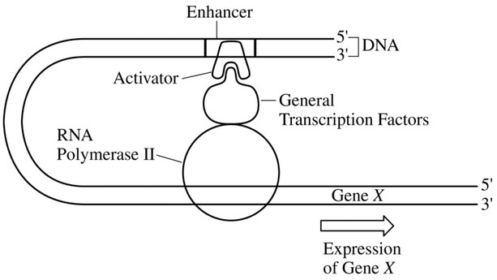

The figure above depicts the DNA-protein complex that is assembled at the transcriptional start site of gene \(X\)
when the expression of gene \(X\) is activated in liver cells. Previous studies have shown that gene \(X\) is never
expressed in nerve cells. Based on the diagram, which of the following most likely contributes to the specific
expression pattern of gene \(X\) ?
The correct option correctly removes a vital component of the DNA-protein complex, preventing transcription. If the activator does not bind, the gene will not be activated.
Production of tRNA is not controlled by the complex.
From the figure, the general transcription factors do not inhibit the activator.
Prior to mitosis, the entire genome is copied. Specific DNA segments are not added to specific cells.